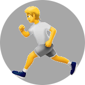

Die Oh-Shit-Map ist eine Fullscreen-Karte auf der öffentliche Toiletten dargestellt werden. Dabei wird versucht, möglichst alle in Openstreetmap aufgeführten, öffentlichen Toiletten zu erfassen. Das gelingt leider nicht immer, da nicht alle Toiletten korrekt getaggt sind.
Credits
Die Karte stammt von Openstreetmap, wo sie unter der CC BY 3.0 Lizenz veröffentlicht wird. Die Kartendaten stammen ebenfalls von Openstreetmap und sind unter der Open Database License veröffentlicht.
Für die Darstellung der Karte auf dieser Seite kommt Leaflet zum Einsatz. Die Toilettendaten werden dabei mittels Overpass-API abgerufen. Die Sidebar wurde mit Hilfe von Bootstrap und JQuery realisiert, die Sidebar-Icons stammen von Font Awesome.
Mitmachen
Die Oh-Shit-Map ist als Github-Repository verfügbar und darf jederzeit erweitert werden.
Die aktuell angezeigten Toiletten können hier als GPX heruntergeladen werden, bspw. um sie auf dem Wander-GPS, dem Smartphone in einer geeigneten App oder anderweitig zu nutzen.
Werden aktuell keine Toiletten angezeigt, sind entweder keine da, oder sie wurden ausgeblendet. Wurden sie ausgeblendet, funktioniert der Download natürlich trotzdem.
Für den Fall, dass auch (oder nur) Trinkwasserstellen angezeigt werden, können die hier ebenfalls als GPX heruntergeladen werden. Und wenn sie gerade nicht angezeigt werden, funktioniert der Download natürlich trotzdem. Nur ohne hingucken.
Sportplätze in seiner Nähe kennt man ja für gewöhnlich,es sei denn, man ist neu in der Stadt oder die Stadt ist riesengroß. Aber im Urlaub will man es schon mal wissen, gelle?! Natürlich können diese feinen Anlagen auch heruntergeladen werden. Und zwar exakt hier:
Huuuhuuuu, Gespenster! Ob es die hier gibt, weiß niemand, aber es gibt ja auch Wasser und so haben auch diese morbide anmutenden Daten Zweck und Berechtigung. Also her damit!
Nicht alle der in Openstreetmap aufgef√ºhrten Toiletten k√∂nnen auch f√ºr das »gro√üe Gesch√§ft« verwendet werden. Da w√§re bspw. das ber√ºhmte Berliner »Café Achteck«. Aus diesem Grunde sind einige der Toiletten besonders gekennzeichnet. Gleiches gilt f√ºr das Thema Zug√§nglichkeit, denn manche Toiletten sind nur zu bestimmten Zeiten oder f√ºr bestimmte Personengruppen nutzbar.
Aktuell verwendete Icons
Diese Toiletten sind laut Openstreetmap »vollwertige« Toiletten.
Wie oben, nur dass diese Toiletten als Kundenklo gekennzeichnet sind, also einerseits vermutlich nicht ständig erreichbar sind und man entweder Kunde sein, oder ganz lieb fragen muss.
Alle als Urinal gekennzeichneten Toiletten. Hier kann also nur schnell Pipi gemacht werden. Was ja zuweilen auch mal ganz wichtig ist.
Analog zum Kundenklo, hier eben nur als »Pipibude«.
Hier steht zwar ein Klo, aber der Zugang ist beschränkt. Manchmal schränken nur Öffnungszeiten die Zugänglichkeit ein, manchmal aber auch andere Gründe. Mehr Auskunft gibt hier oft ein Klick auf das Icon.
Hier handelt es sich um als kostenpflichtig gekennzeichnete Toiletten. Zumeist steht der Preis mit dabei, kann also im Popup abgelesen werden.
Das Gleiche in gr√ºn, √§hh, gelb. ü§≠ Hier ist nur ein Urinal vorhanden, aber auch das ist als kostenpflichtig gekennzeichnet.
Spezielle Icons
Diese Icons werden auf den zusätzlichen Layern verwendet.
Wo dieses Männchen herumflitzt, ist eine Laufbahn vorhanden. Ob sie öffentlich ist, erfährt man in den Details bei Klick aufs Icon, ob sie für den eigenen zweck geeignet ist, sieht man dann vermutlich eher auf der Karte.
Dieses Icon zeigt, dass es hier Trinkwasser gibt. Wer also bei seinem Läufchen nicht nur unten Druck, sondern auch oben Zug verspürt, ist hier genau richtig.
Fragt nicht! Ja okay, auch Frieddhöfe haben hier ihre Berechtigung, denn auf Friedhöfen gibt es für gewöhnlich frei zugängliche Wasserhähne, aus denen für gewöhnlich auch Trinkwasser kommt. Radfahrer kennen das, ihr jetzt auch.
Hier in der Oh-Shit-Map werden keine Cookies verwendet und es erfolgt auch keinerlei Tracking der Benutzer. Die Karte fragte nur nach der Erlaubnis, den aktuellen Standort des Benutzers zu ermitteln. Damit wird sie dann auf diesen Standort, der aber zumeist den aktuell genutzten Einwahlknoten darstellt, zentriert. Verweigert man die Standortabfrage, funktioniert trotzdem alles, nur wird die Karte dann initial auf Berlin zentriert.
Deshalb habe ich hier zun√§chst auch auf diese ewig nervenden DSGVO-Banner verzichtet. Zu was sollte man auch zustimmen, wenn es nichts zum zustimmen gibt, gelle?! üòé
Spenden
Ja, richtig. Es kostet auch ein paar Taler Geld, so eine Seite/Karte/whatever zu betreiben. Und ebenso richtig, ich mache das ja sowieso. Aber dennoch mag ja manch einer gern ein paar Münzen in den virtuellen Hut werfen. Dies ist auf folgenden Wegen möglich: